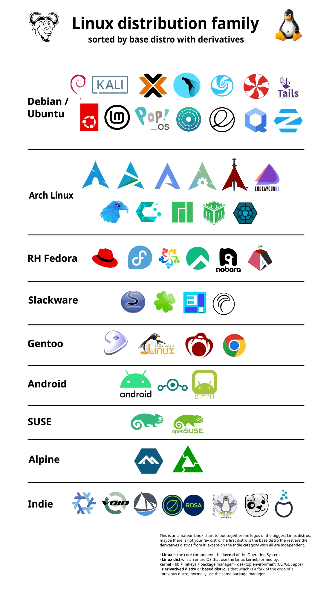

Выбор дистрибутива
Выбор дистрибутива Linux зависит от ваших нужд и уровня опыта. Вот несколько рекомендаций:
- Ubuntu — хороший выбор для начинающих, стабильный и поддерживаемый сообществом.
- Debian — стабильный и надёжный, популярен среди серверных администраторов.
- Fedora — подходит для тех, кто хочет использовать новейшие технологии.
- Arch Linux — для опытных пользователей, которым нравится кастомизация и контроль.
- Mint — для тех, кто ценит удобство и простоту, похож на Ubuntu.
Выберите дистрибутив, исходя из вашего опыта и требований к системе.